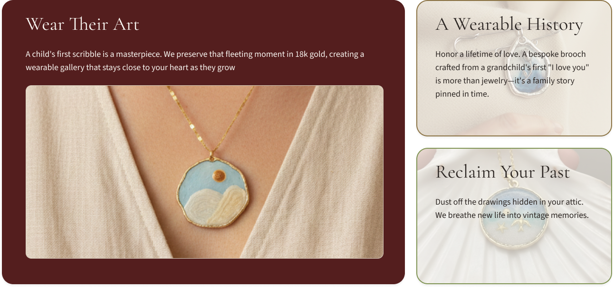

Bearla — Custom Heritage Keepsakes
Turning Raw Children's Doodles into Solid Gold Heirloom Brooches

Project Overview
Bearla is a specialized digital commerce experience that transforms raw children's drawings—like a grandchild's first scribble—into handcrafted precious metal keepsakes.
The Problem: Parents and grandparents want to preserve fleeting childhood memories, but traditional custom jewelry ordering feels rigid, uncertain, and hard to visualize before buying.
The Objective: Design a high-trust, responsive web application that demystifies the doodle-to-jewelry process, guides users through image uploads seamlessly, and optimizes conversion across mobile and desktop.
Identifying Marketplace Gaps
- 1. The Visualization Gap: Standard custom jewelry sites ask for payments upfront before showing how a 2D line drawing converts into a 3D physical piece. Bearla solves this by introducing a clear "Sketch-to-Gold" preview engine early in the flow.
- 2. Mobile Upload Friction: Most users browse on mobile while photos of physical drawings sit on their phones. Standard sites force clunky multi-step desktop forms. Bearla streamlines the file-picker and camera upload UX directly within the primary shop flow.
User Personalization Architecture
We mapped a 3-step continuous task flow designed to reduce drop-off during customization:
- Step 1: Capture & Upload — Dual input options (Camera scan or gallery upload) with auto-contrast detection for hand-drawn lines.
- Step 2: Material & Accent Selection — Real-time rendering selection across solid gold, silver, or resin color fills.
- Step 3: Heirloom Proofing — Interactive 3D/high-res preview confirmation before cart entry.

High-Fidelity Responsive Grid Frameworks
To preserve an editorial, high-end visual tone while adapting to mobile screens, we translated the desktop spatial system into touch-first mobile patterns:
- Hero Transformation: Desktop split-screen (headline + side-by-side transformation preview) converts to a vertically stacked card module on mobile.
- Navigation & CTAs: Desktop horizontal header links move into an accessible drawer; primary action buttons ('Upload Drawing', 'Begin Heirloom') lock to full-width touch targets (≥ 48px) on mobile viewports.

Defensive System Controls & Edge-Case Logic
Handling user-generated artwork introduces critical edge cases. We designed specific system prompts and validation flows for:
- Low-Resolution / Blurry Uploads: Auto-detecting faint pencil lines and prompting users to adjust lighting or trace over the sketch.
- Cropping & Line Isolation: Providing an inline vector-crop tool so users can isolate a single doodle from a full page of scribbles.
Inclusive Layout Hierarchy & Accessibility Compliance
- Contrast & Legibility: Maintained strict WCAG AA contrast on warm neutral backgrounds, ensuring legibility for older demographics (e.g., grandparents purchasing gifts).
- Screen-Reader Hierarchy: Structured semantic heading levels (H1, H2, H3) and alt-text descriptions for interactive transformation previews.
Strategic Product Design Takeaways
- Trust Precedes Conversion: For highly custom, emotional products, showing the transformation process before forcing account creation or checkout is essential for driving conversions.
- Responsive Cohesion: Designing modular grid components made it seamless to scale rich brand storytelling from desktop down to mobile viewports without sacrificing performance or clarity.